ワットポーチャイシー；その1/ウドンターニー
WatPhoChaiSri：part1/ UdonThani
ウドンターニー県の北西部、バンプー近郊にあるワットポーチャイシー。
そこはコンクリ仏の新たなる可能性を感じさせてくれる寺であった。
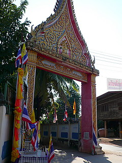
一歩門を潜れば先般お伝えしたワットプラヨーンウォンを更に胃酸過多気味にした爆音スチャラカサウンドが鳴りまくり。
微妙に神経を逆撫でてくれる音楽に乗せて流れるのは説法なのかラップなのかわからない謎のＭＣ。
…ギル・スコットヘロン張りのファンキーブッダ吟遊詩人っぷり。
10分聞き続けると耳が胸焼けを起こしそうなねちっこさ、脂っこさ。
静謐な仏教寺院で瞑想を…なんて事を考えているスピリチュアルマニアの方々などが来たら卒倒しそうな特濃レイブパーティー。
そういえば巨大スピーカーで坊さんが延々説教したり変な音楽を流しているところって…変な寺が多いような気がします…
さて。
境内の様子を。
門を潜って最初に現れるのが一寸タイっぽくない色彩の建物。
どっちかというとミャンマーやインド、ラオスといった旧英仏領の寺のような感じだ。
門を守る衛兵も西洋風。
実は左の衛兵の上にいる方も仏さんかと思ったのだが、よく見たらサファリジャケットみたいなのを着てました…
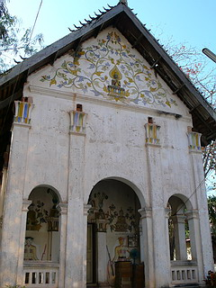 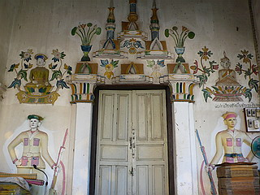
お隣のそっけない建物の中にはプチ大仏が。
大スチャラカサウンドの発生源はここからであった。
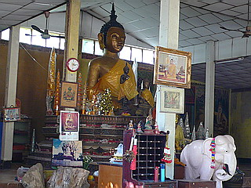
で、ウボソ（本堂）。
中では数人のファミリーが参拝をしていた。
本尊は格子の向こうでよく見えませんでした。
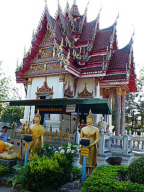 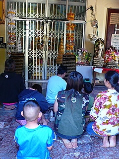 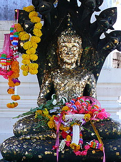
ウボソの裏手には仏像修復所があり、直してんだか壊してんだか。
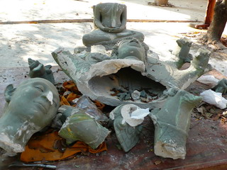
ウボソの先にはやや怪しげなコンクリ仏が並ぶ。
この辺から段々段々怪しげな雰囲気がヒートアップしてくる。
どこまでヒートアップするか、といえば今の時点では天井知らずとだけお答えしときます…
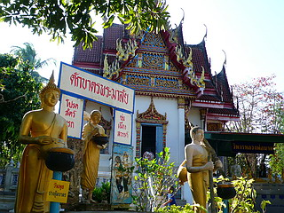 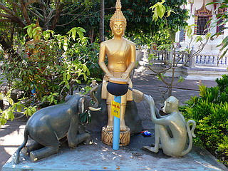
で、その先にはタイの伝説を具現化したのであろう、大量のコンクリ像が花びら大回転！
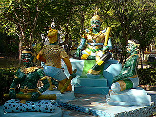 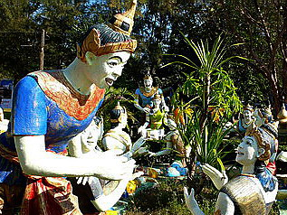
馬車もゴージャスに2頭立て。象は一頭だけど三頭立て！
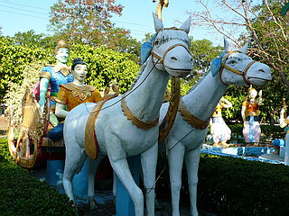 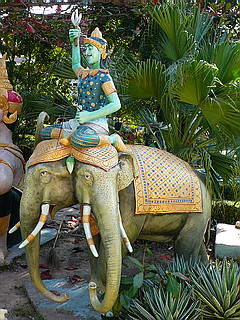
超Ｍ字開脚ですわ。
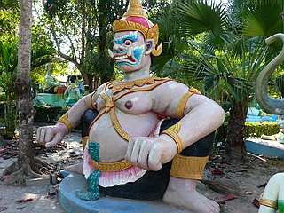
まさこさん！ぼっ僕は…
よっ！若いのガンバレや！
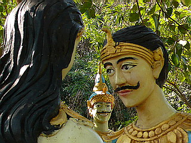
それにしても特筆すべきはコンクリ像の出来の良さ。
この生き生きとした表情をご覧いただければそんじょそこらのコンクリ像とは訳が違うのが一目瞭然。
さぞかし腕のいいコンクリ職人が仕上げたのだろう。
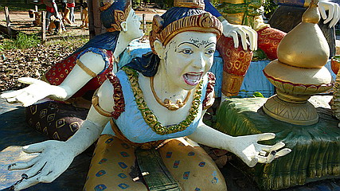 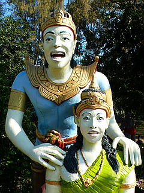
今日はうぬらに芸能界裏話でもして進ぜようか…
キャー、してして〜！
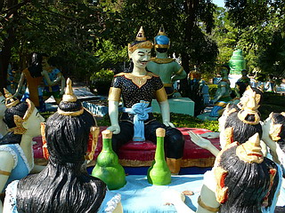 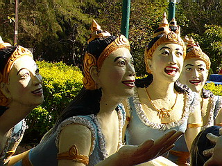
そんな楽園を思わせるシーンが延々と続くがその後にさらに怪しいコンクリ像がチラッと見えた。
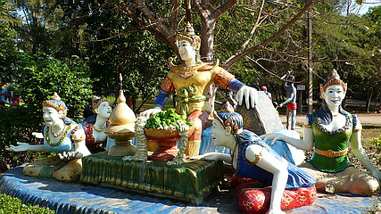
おお、あれはまさしく地獄じゃないか！
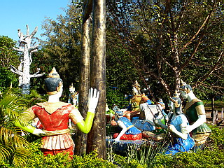
着飾った皆さん、背後で繰り広げられているもうひとつの壮絶なパーティーは一切シカト。
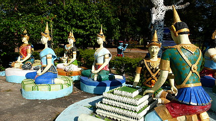
志村〜、後ろ後ろ！
次、地獄のパーティーだ！
泰国珍寺修行 北へ
珍寺大道場 HOME